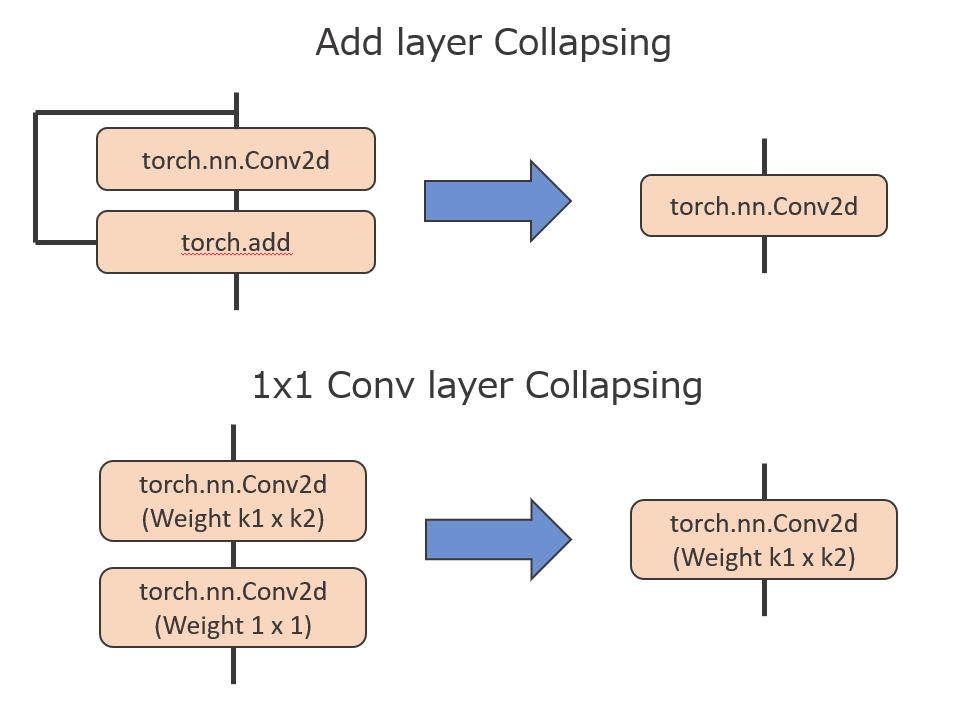

Unbalanced “concatenation”¶
Overview¶
The concatenation layers can be a sensitive element in quantized models. When it involves combining multiple tensors that may have significantly different value ranges, leading to potential inaccuracies in quantization.
For example, the quantization of a tensor that contains values ranging in (-1, 1) together with a tensor that ranges in (-64, 64) is less accurate than the quantization of each tensor separately.
Trouble Situation¶
The quantization accuracy may degrade when the value ranges are significantly different in concatenation layers after graph optimization.
MCT optimizes the graph using layer concatenations, the Add layer Collapsing(collapsing the Add layer to preceding the Convolution) and the 1x1 Conv Layer Collapsing(collapsing the 1x1 Convolution layer to preceding the Convolution).
{kind=link}
Solution¶
When you discover the concatenation layers with inputs that have notably different threshold values, consider the following points:
Disable some graph optimizations by modifying the
QuantizationConfiginCoreConfig.
If Add layer Collapsing, set
linear_collapsingto False.If 1x1 Conv Layer Collapsing, set
residual_collapsingto False.
core_config = mct.core.CoreConfig(mct.core.QuantizationConfig(linear_collapsing=False,
residual_collapsing=False))
quantized_model, _ = mct.ptq.pytorch_post_training_quantization(...,
core_config=core_config)
Note
Some graph optimizations will not be performed, which may slow down execution speed.
Add a scaling operation between problematic “concatenation” layers in your float model.